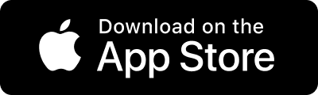
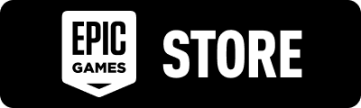
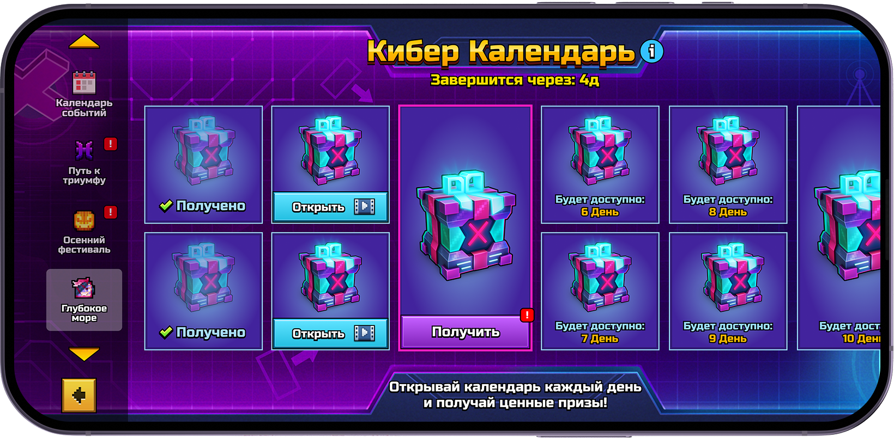
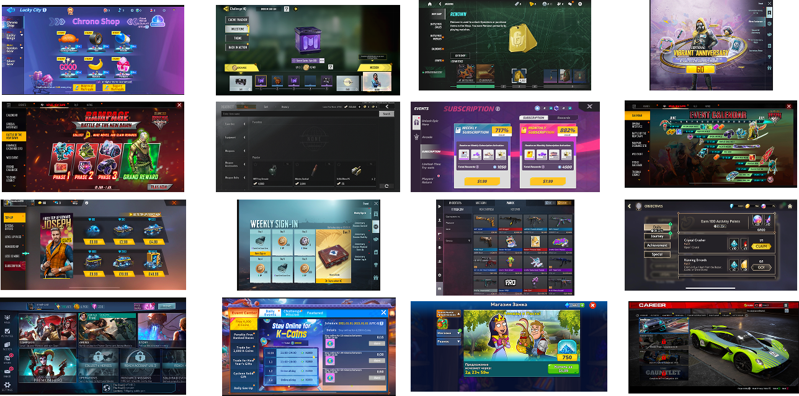
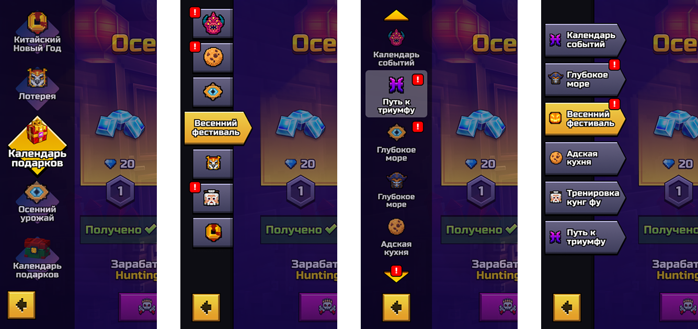
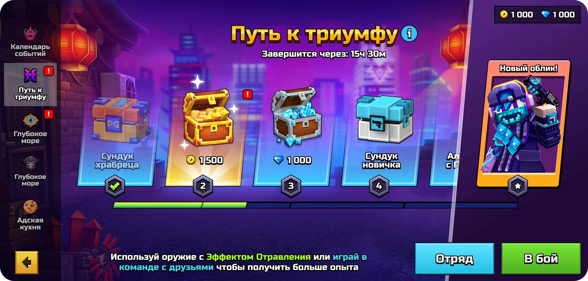
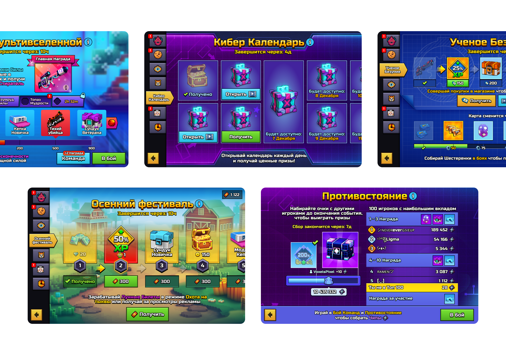
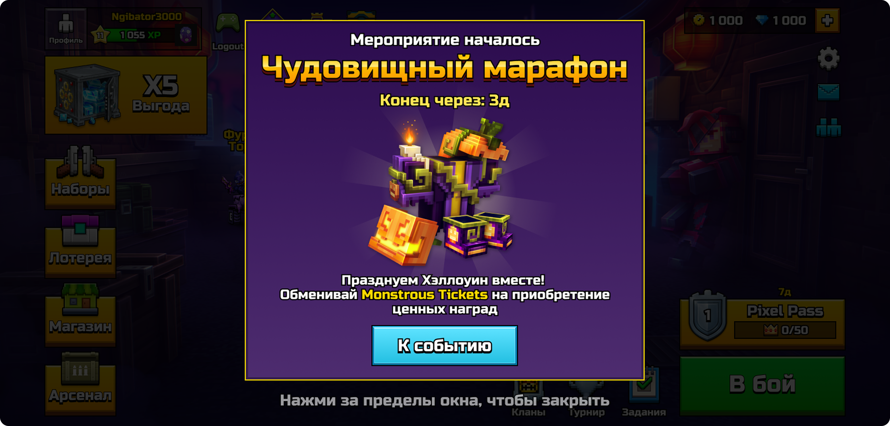
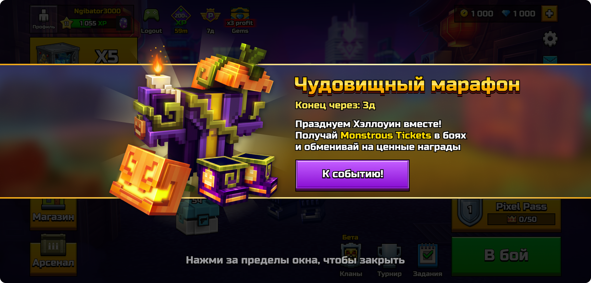
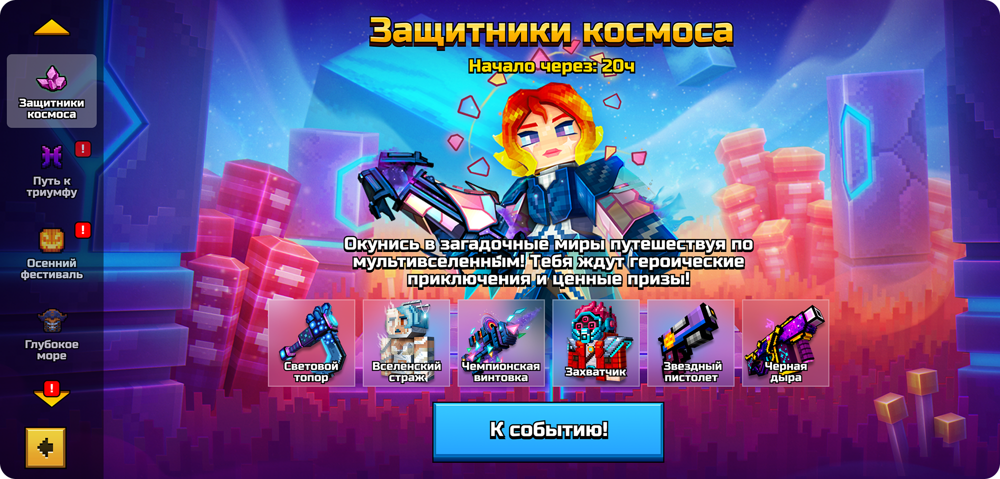

Реализация фичи «Хаб мероприятий» для Pixel Gun 3D в рамках спринта


Вводные данные
Проблема
Игроки недовольны большим количеством платного контента. Получение ценных наград требует много времени, усилий или покупок, поэтому большинство игроков не может получить все награды Каждая активность имела отдельную кнопку входа на главном экране. Это ограничивало количество одновременно запущенных ивентов
Задача
Создать переиспользуемые шаблоны ивентов с простой прогрессией без монетизации. Предусмотреть сезонные скины для быстрой смены визуального оформления без изменения игровой логики. Разработать одельный экран-хаб в котором будут собраны все активные мероприятия

Анализ конкурентов
Изучаю, как аналогичная проблема решена у конкурентов - в играх схожих жанров и проектах с сопоставимой возрастной аудиторией. В результате выделил два основных подхода:
Вариант 1
Экран со списком активных событий с переходом на отдельный экран каждого событияВариант 2
Единый экран событий с боковой навигацией между событиями без перехода на отдельные экраны
Меню хаба
После обсуждения концепций со стейкхолдерами и командой остановились на варианте с навигацией через боковое меню. Опросы показали, что игрокам удобнее переключаться между ивентами из единого меню и сразу видеть доступный контент, не переходя на отдельный экран каждого мероприятия. Приступаю к визуализации концепта

Подготовка ивентов
После обсуждения концепций со стейкхолдерами и командой остановились на варианте с навигацией через боковое меню. Опросы показали, что игрокам удобнее переключаться между ивентами из единого меню и сразу видеть доступный контент, не переходя на отдельный экран каждого мероприятия. Приступаю к визуализации концепта


Кастомизация
После обсуждения концепций со стейкхолдерами и командой остановились на варианте с навигацией через боковое меню. Опросы показали, что игрокам удобнее переключаться между ивентами из единого меню и сразу видеть доступный контент, не переходя на отдельный экран каждого мероприятия. Приступаю к визуализации концепта
Дополнительно



Одного экрана недостаточно
Из-за обилия легаси кода не все мероприятия удалось поместить на один экран. Для таких мероприятий подготовил экран с превью наград и кратким описанием события и ссылкой на отдельный экран

Итоги
Комьюнити тепло приняло обновление. Исходя из отчета комьюнити-менеджера игроки отмечают: Разнообразия контента Отсутствие жесткой монетизации Больше возможностей получения контента (оружие, скины и т.д.) Дополнительный источник расходников (валюта, ключи) Удобство навигации